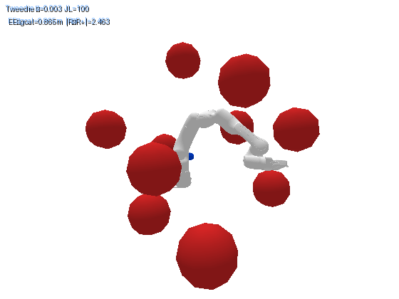
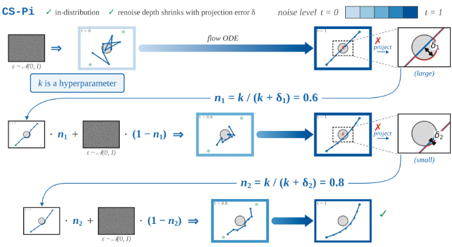
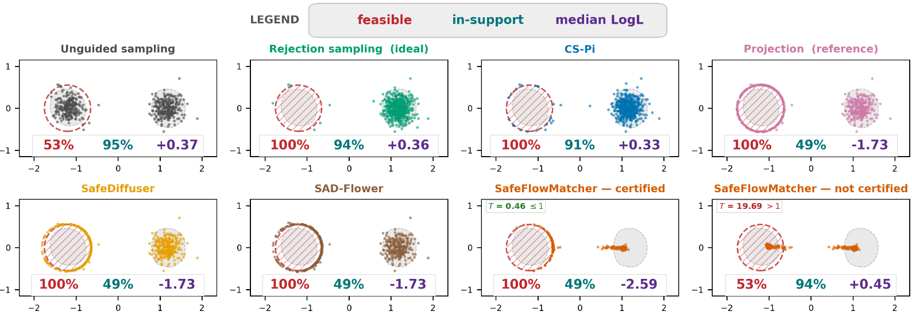
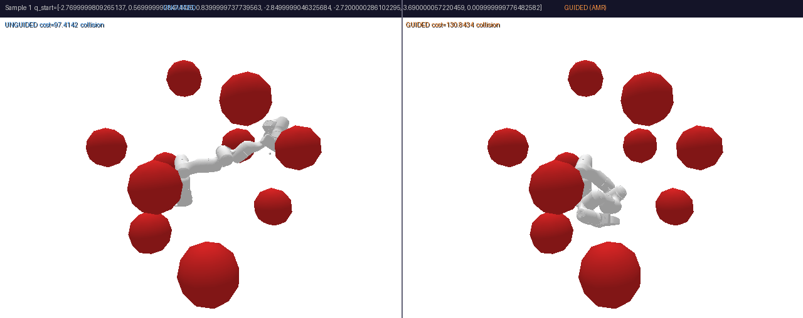
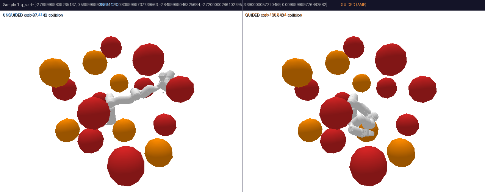
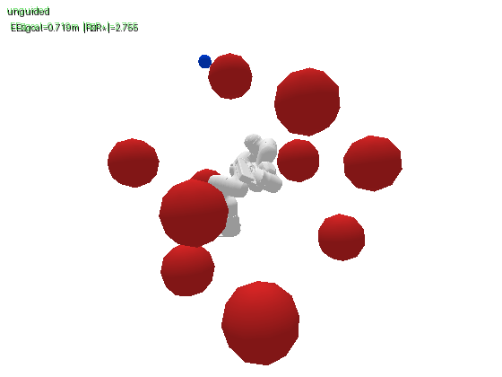
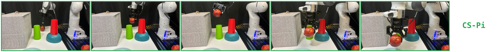
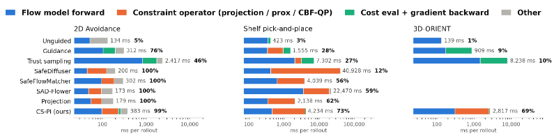
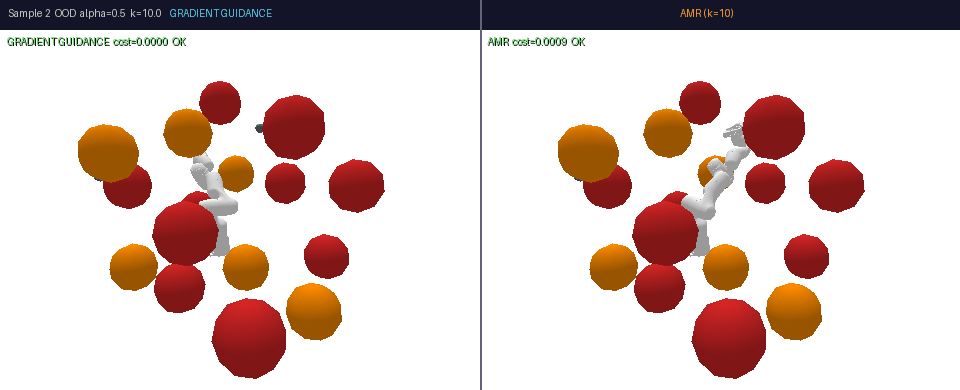
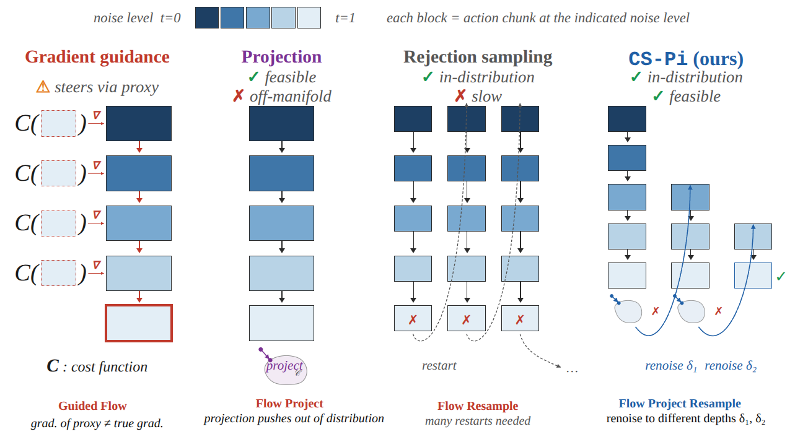

CS-Pi
Enforce a hard constraint on a pretrained flow-matching robot policy at deployment time — with no constraint gradient, no auxiliary network, no retraining, and no per-deployment tuning.
"I want to show you a robot video first, then spend the rest of the time explaining why one line of it works."
Set expectations up front: this is a sampling paper, not a training paper. Nothing here touches policy weights. Tell them to interrupt — this is a lab meeting, and Act II (why the baselines fail) is where the real argument is.
Structure: the bind → why every existing sampler fails → the one-line insight → the method → four experiments → limits and open questions.
Pick your path with C before you start. The deck carries three, and the rail shows which is live and how long it runs:
- essential · 45 min · 18 slides — the spine. Fits a 45-minute slot with time for questions. This is the default.
- full talk · 72 min · 32 slides — adds Proposition 1, the projection implementation, the speed table, the live loop, and the per-benchmark rollouts.
- deep dive · 85 min · 37 slides — adds the Jensen-swap bound, the CBF comparison, the α side-by-side, and config 2.
Slides outside the current path are skipped by the arrow keys but stay reachable from the overview (O), so you can jump to one if a question calls for it. That is the intended way to handle "can you say more about X" — the deep-dive slides are built as answers to specific questions.
I · The bindFranka · π₀.₅ · zero-shot
Same policy. Same scene. One thing changed.
Pick the apple, place it on the blue plate — with an obstacle that was never in the demonstrations. Both clips run the same frozen π₀.₅. Clips play at 4× speed.
"Same policy weights. Same scene. Same constraint. The only difference is how the actions were sampled."
Do not explain the method yet. The whole point of opening here is that they should be curious about what changed. Say only: π₀.₅ running zero-shot on a Franka, no finetuning; the constraint is a set of obstacle bounding boxes coming out of a ZED 2 RGB-D pipeline — real perception, not ground truth.
Then promise the payoff: "By the end you'll know exactly what changed, and it's a loop you could write this afternoon."
I · The bindSetting
A flow-matching policy's strength is its distribution
- Flow-matching and diffusion policies are the default for manipulation. π₀ / π₀.₅, Diffusion Policy, and the VLA family. Trained by imitation on demonstrations.
- They work because they model the whole distribution of competent behavior. Multimodality is the feature: there are many good ways to reach into a shelf, and the policy keeps all of them.
- Sampling = integrate an ODE from noise to a clean action chunk. A fixed number of function evaluations (NFE) per trajectory. Nothing about that ODE knows what an obstacle is.
Keep this short — this is orientation, not content. The only sentence that has to land is the callout: the distribution is the model. Everything in Act II is a way of damaging it.
Define NFE here in passing (number of flow-model forward passes per trajectory) so the compute column in every later table is already understood.
I · The bindProblem statement
Deployment adds a constraint the demonstrations never contained
What shows up at deployment
- An obstacle that wasn't there during data collection
- A grasp or end-effector orientation someone now requires
- A keep-out zone, a workspace bound, a joint limit
Why you can't just retrain
- No demonstrations exist for this obstacle
- The constraint changes per deployment — you'd retrain again tomorrow
- The policy may be a large VLA you do not own and cannot finetune
This slide is the framing that makes the whole paper necessary — spend a beat on it.
The strongest of the three "can't retrain" arguments is the middle one: even if you had the data and the compute, the constraint is per-deployment. A method that requires retraining per obstacle is not a method, it's a research project each time. Say that out loud.
"So we've boxed ourselves in on purpose: frozen weights, new constraint, inference time only. What's left? Only the sampler."
I · The bindWhat a good sampler must do
Two requirements, and they pull against each other
Requirement 1 is obvious. Requirement 2 is the one that gets argued about in this room — so let's settle it with a number.
Deliberately teed up so the next slide can land. Ask the room directly: "who thinks requirement 2 is just a likelihood fetish?" Then turn the page.
If you want the crisp version: requirement 1 is about the world (don't hit things), requirement 2 is about the robot (produce actions this embodiment and this controller can actually execute competently).
I · The bindThe argument that earns the rest of the talk
In-distribution is a safety property, not a statistic
Gradient guidance on the 7-DoF shelf task achieves the best collision number in the entire benchmark. Look at what it costs.
This is why every table in this talk reports safe-success — collision-free and picked and placed — alongside log-likelihood. Either number alone is gameable.
This slide converts requirement 2 from a preference into an argument, and it does it with the baseline's own best number. That's why it's persuasive — you're not asserting that off-manifold is bad, you're showing the failure mode in the metric the baseline wins.
"Guidance has the best collision rate in the benchmark. It also stopped doing the task. Those are the same fact."
The mechanism behind it, if pressed: an off-manifold action chunk is jerky and dynamically inconsistent — the low-level controller can't track it, the arm stalls or flails, and the task fails. On the 3D-Orient task we can show this directly: guidance produces single-step end-effector jumps of 0.93 m; CS-Pi produces 0.108 m, essentially identical to the unmodified policy's 0.107 m. Flag that you'll return to it.
II · Why today's samplers failTaxonomy · 1 of 4
There are only so many places to intervene
One sampling pass has five stages. Every inference-time constraint method is just a choice of which stage to touch.
Gradient guidance touches the flow itself
- At every ODE step, form a one-step estimate x̂₀ of the clean action and add −α∇C(x̂₀) to the velocity.
- The trajectory never runs unmodified, so the endpoint is not a draw from the policy — it is a draw from a bent version of it.
Spend your first fifteen seconds on the row labels, not the column. The five rows are the whole frame for Act II: noise, flow, endpoint, fix-up, execute. Once the audience has that grid, each baseline is one sentence — "this one touches that row."
Then plant the question you will judge every column on, and repeat it verbatim four times:
"Is the thing we execute a sample from the policy?"
For guidance the answer is no, and it is no by construction rather than by accident — the method's entire mechanism is bending the flow. The bottom chip says "biased by design" for that reason. Don't argue the magnitude of the bias yet; the next three slides after the taxonomy do that with numbers.
II · Why today's samplers failTaxonomy · 2 of 4
Or leave the flow alone and fix the answer
Guidance paid for feasibility inside the flow. The alternative is to run the flow honestly and repair the endpoint afterwards.
Projection touches the fix-up stage
- Run the unmodified flow, take the endpoint â₁, and snap it to the nearest point of the feasible set C.
- Feasible by construction, cheap, and it needs no gradient — the two things guidance could not give us.
- But the snapped point is chosen for proximity, not for likelihood. Nothing in the operator knows what the policy would have done, so the result can sit anywhere — including in a region the demonstrations never visit.
This is the column the whole talk turns on, so introduce it warmly rather than as another failure. Everything in the "mechanism" half of this slide is a genuine strength — cheap, exact, gradient-free — and Act III keeps all of it.
The single defect, and say it in exactly these terms because the phrasing recurs at the turn: the projection is chosen for proximity, not for likelihood. Nearest is not most-likely, and in a bimodal policy the nearest feasible point is often on the wrong side of the obstacle entirely.
Resist previewing the fix. The audience should leave this slide thinking projection is the best of a bad set, which is precisely the setup for slide "THE TURN".
II · Why today's samplers failTaxonomy · 3 of 4
Or refuse to repair anything, and just try again
If editing the sample is what ruins it, don't edit. Draw complete samples and keep the first feasible one.
Rejection also touches fix-up — but by discarding
- Draw, test against C, and if it fails, throw the whole trajectory away and restart from pure noise.
- This is the one baseline that is correct: what survives is an exact draw from the policy conditioned on feasibility. It is the reference we want to match.
- The cost is unbounded. The accept rate is the prior's own mass on C, so as the constraint gets tighter the expected number of redraws blows up — 6,732 NFE on the 2D benchmark against CS-Pi's 283, and it still only reaches 68.1% safe-SR because the budget runs out.
Point at the dashed arrow. It leaves the fix-up row and travels all the way back to the top — to pure noise. Rejection throws away every bit of computation it just did, including the part that was fine.
Give rejection its due: it is the only statistically correct baseline on the board, and on the 2D benchmark it is the second most in-distribution method in the table. When someone asks "why not just reject?", the answer is never "it's wrong", it's "it's right and unaffordable" — and it degrades exactly where you need it most, because a tighter constraint means a smaller accept rate.
"Rejection restarts from scratch. Hold that arrow in your head — the last column changes only where it lands."
II · Why today's samplers failTaxonomy · 4 of 4 · where we land
Ours changes one thing: how far back the arrow goes
Same five stages, same fix-up row, same idea of trying again. The only difference from rejection is where the retry re-enters the pipeline.
- Run the flow, project the endpoint onto C — and then use the projection as a target rather than as the answer.
- Renoise only to depth n = k/(k+δ), where δ is how far the projection had to move the sample, and re-run from there.
- A confident sample that barely violated C gets a shallow retry; a sample that was badly wrong gets a deep one, and can switch modes entirely.
You are showing the answer before you have argued for it. That is on purpose: the paper's own figure does the same, and it gives the audience somewhere to put the next eight slides. Say out loud that this is a preview so nobody thinks the argument is finished.
Everything is in the geometry of the two dashed arrows. Put them side by side with your hand: rejection's arrow goes to the top, ours stops partway down. That is the entire method — one number, how far back to go, and δ supplies it for free because the projection already computed it.
If you get "so it's just rejection with a warm start?" — yes, and that framing is a gift. Take it, then say the warm start is adaptive and comes from the residual you were already paying for. Prop. 1 later says exactly what distribution it draws from.
II · Why today's samplers failTaxonomy · all four
Four ways to enforce a constraint at inference
Read it by row: everyone shares the same flow model, and they differ only in which stage they touch. Read it by column: only the right-hand two execute something the policy would actually have produced — and only one of them is affordable.
This is the slide to leave up while you take questions on the taxonomy, and the one to flip back to whenever someone loses the thread later.
Drive the bottom row home. Two of the four never execute a policy sample at all — guidance because it bent the flow, projection because it replaced the answer. That is not a tuning problem, it is what those methods are.
"Everything on this board is a different answer to one question: what do you do with a sample that isn't feasible? Bend it, replace it, or throw it away. We do a fourth thing — we ask for another one, starting from what we learned."
Then set expectations for the next stretch: the following slides go back to columns one, two and three and show what each costs in measured numbers, because "it's biased" is a claim, not evidence. If you are tight on time, the frontier chart and the projection slide are the two that must survive.
II · Why today's samplers failBaseline 1 · Gradient guidance
Guidance steers on a gradient taken at a point that isn't a plan yet
Why it breaks
- Early in the trajectory x̂₀ is an average over modes — a blur, not a plan. Nudging a blur toward feasibility does not select a feasible route; it interpolates between routes, and the interpolation of two good paths around an obstacle goes straight through it.
- A hard constraint gives no usable gradient. Distance to a box is flat away from the boundary and non-smooth at it. Exactly where you need signal, there is none.
Expect pushback here from anyone who likes classifier / classifier-free guidance — it's a well-loved tool. Be precise rather than dismissive.
"The gradient is evaluated at a point that isn't a plan yet."
The mode-interpolation argument is the one to lead with, because it's geometric and undeniable: if the policy is still undecided between going left around the obstacle and going right, the posterior-mean estimate x̂₀ sits between them — which is exactly where the obstacle is. The gradient there pushes on a path that no mode of the policy actually proposes.
Second argument, for hard constraints specifically: a signed-distance or indicator constraint is piecewise-flat. Guidance methods paper over this with a smoothed surrogate, and then you're enforcing the surrogate, not the constraint.
II · Why today's samplers failBaseline 1 · hyperparameter sweep
Guidance doesn't have a bad setting — it has no good one
Turn the guidance weight α down and it reaches the goal while still colliding. Turn it up and it stops colliding by no longer doing the task. Both ends are measured on the shelf; every setting in between trades one for the other.
Shelf benchmark, 150 tasks. Collision axis is log(1+x) so the cluster near zero is readable. Up and to the right is better. The dashed line joins the two measured ends of the guidance sweep — α = 0 is the unmodified policy, α = tuned is the best swept setting. CS-Pi sits 47 points of goal reach above that line.
The framing: a guidance weight is a dial between two failure modes, not a knob you can tune to a good answer.
- α = 0 is literally the unmodified policy: 72.0% goal reach, 82.0% collision. It does the task and hits everything.
- α = tuned (the number we report as the guidance baseline): 0.0% collision, 28.0% goal reach. It hits nothing and does nothing.
Both of those are measured points on the shelf. The dashed line between them is the trade-off guidance is choosing along.
"Every point on that dashed line is a choice between colliding and not doing the task. CS-Pi isn't further along the line — it's forty-seven points above it."
FRONTIER array in the deck's script and they'll render — it's a one-line
edit per point, and a measured curve is stronger than an interpolated line.II · Why today's samplers fail3D-Orient · same goal, two guidance weights
The same failure, visible at both ends of the dial


Same goal, same policy, one order of magnitude in α. Weak guidance never holds the orientation; strong guidance holds it by wrenching the arm — recall the 0.93 m single-step end-effector jumps in the 3D-Orient table.
The frames are annotated with live end-effector distance and orientation error, so you can narrate against the numbers rather than gesturing at the arm.
Weak α: the trajectory looks like the prior. It's smooth, it's plausible, it ignores the constraint.
Strong α: the constraint starts to bite, and the motion falls apart — this is where the 0.928 m max end-effector step in the results table comes from. It isn't satisfying the constraint gracefully, it's being dragged.
"There's no α in between that gives you the first one's motion and the second one's constraint. That's not a tuning failure — the next slide says why."
II · Why today's samplers failThe bias, precisely
Guidance swaps an average of gradients for a gradient at an average
What guidance wants is the posterior-averaged gradient. What it computes is the gradient at the posterior mean â. Those are not the same thing, and the gap is bounded by the posterior's spread:
- The bias is the expected Taylor remainder of ∇L about â; LH is the Lipschitz constant of ∇²L.
- It blows up exactly when the posterior is wide — i.e. early in the trajectory, and whenever the policy is still undecided.
- It also blows up when the cost's curvature varies across the posterior — i.e. for hard constraints with sharp boundaries.
The mean of that posterior is the rung. Guidance pushes on the rung — no value of α fixes a direction that points at an obstacle.
This is why turning α up doesn't help: α scales a biased direction. More of a wrong direction is still wrong.
This is the rigorous version of the hand-wave from two slides ago, and it's worth having because it converts "guidance is blurry early on" into a statement with a bound on it.
Say it in words before the formula: guidance would like to know, on average across everything the policy might still do, which way reduces the cost. It can't afford that expectation, so it takes one representative point — the posterior mean — and differentiates there. Swapping those two is a Jensen-type move, and the error you incur is the curvature of ∇L integrated against the posterior's covariance.
The shelf-rung example is the one that lands. Note it does not even require multimodality — a single wide unimodal posterior straddling a gap is enough. Its mean sits on the obstacle, so the gradient at the mean points into the obstacle. That is a bias, not noise, which is exactly why trust sampling's variance reduction didn't rescue it, and why no α does either.
"α scales the direction. It doesn't fix the direction."
II · Why today's samplers failBaseline 2 · Trust sampling
Trust sampling spends 5× the compute on the same broken signal
- Schedule-aware guidance: limit how much early steps are allowed to move, add inner iterations per step to reduce the variance of the proxy gradient.
- It is a good fix for gradient variance — which is a real problem.
- But the problem here isn't variance, it's that the proxy is uninformative while the policy is still between modes. Averaging an uninformative signal harder does not make it informative.
Be genuinely fair to trust sampling — it's a thoughtful method and treating it as a straw man will cost you credibility with anyone who's read it. The framing that works is diagnostic mismatch: it correctly identifies that the guidance signal is noisy, and correctly reduces the noise. It just turns out that the signal is biased, not noisy, and averaging doesn't help with bias.
"You pay five times the compute and land in the same place. That tells you the bottleneck was never compute."
The 5.2× is the important number — it's the empirical evidence for the diagnosis. If more compute on the same signal fixed it, it would have.
II · Why today's samplers failBaseline family · barrier / CBF samplers
A corrected velocity deforms a trajectory. It cannot re-draw one.
SafeDiffuser, SafeFlowMatcher and SAD-Flower all guarantee constraint satisfaction — and all guarantee it the same way: by perturbing a velocity applied to the sample you already have. The sample is deformed continuously; nothing ever redraws it.
Safety alone is cheap — projection already provides it for free. The hard part was never satisfying the constraint.
| Method | 2D | Sph. ID | Sph. OOD | Shelf | Shelf logL |
|---|---|---|---|---|---|
| SafeDiffuser | 1.00 | 0.36 | 0.06 | 0.12 | 8.07 |
| SafeFlowMatcher | 1.00 | 0.62 | 0.24 | 0.56 | 8.63 |
| SAD-Flower | 1.00 | 0.43 | 0.12 | 0.59 | 15.60 |
| CS-Pi (ours) | 0.99 | 1.00 | 0.91 | 0.73 | 18.0 |
Each method at its swept best, all implemented over the same base model. CS-Pi leads everywhere except 2D — and on Spheres and Shelf, none of the three barrier methods is violation-free even at its best configuration.
This is the comparison reviewers asked for, and it's the sharpest statement of the paper's mechanism, so it's worth the time even though it's a "related work" slide.
The structural claim, which covers all three at once: they differ in where the correction is applied — SafeDiffuser at every denoising step, SAD-Flower by augmenting the flow with a virtual control input, SafeFlowMatcher by refining a clean sample under a policy velocity with barrier corrections — but they are the same move. A velocity field acting on the sample you have. Continuous deformation. No redraw.
"You can push a trajectory around. You cannot push it into a different mode. Modes are separated by regions the policy assigns no mass to — and a continuous deformation has to cross them."
Read the table left to right and the pattern is the story: on 2D they all hit 1.00 — easy, one obstacle, nothing to switch away from. As soon as the environment has structure that blocks a committed mode (Spheres OOD, Shelf) they fall to 0.06–0.24 and 0.12–0.59 while we hold 0.91 and 0.73. The gap grows exactly with how often mode-switching is required.
SAD-Flower's 15.60 logL is worth acknowledging — it's the only barrier method that stays reasonably in-distribution, and it still can't satisfy the constraint on the hard tasks.
II · Why today's samplers failBaseline 3 · Projection
Projection is feasible, cheap — and executes an action the policy would never draw
- Column 2, with the numbers attached: run the flow, snap the endpoint onto C, execute.
- Feasible by construction, and it costs nothing: no extra flow calls at all.
- It is the strongest baseline in this paper — 62.0% on the shelf, 100% safe on the 2D benchmark, 40% on hardware.
Do not undersell projection. The entire insight of the paper is that projection is almost right — if you trash it here, the turn in two slides has nowhere to come from. Say clearly: it's the best baseline we have, it's free, and on the 2D task it is literally unbeatable on feasibility.
The number that tells the story is −3.34 against the prior's +1.65. That is not a small drift off the manifold; that is somewhere the policy assigns essentially no mass. And it's a five-point drop on a log scale.
"Projection gets a feasible answer. It just gets it by leaving the model."
II · Why today's samplers failBaseline 4 · Rejection
Rejection has exactly the property we want, at a price nobody will pay
- Redraw complete samples until one satisfies the constraint. Execute that one.
- In-distribution by construction — it is a genuine draw from the policy, conditioned on feasibility. Best log-likelihood of any method on 2D (+1.71).
- And it still fails, for a simple reason: when a new obstacle appears, the feasible region has tiny probability under the prior. You can burn 8676 flow calls and still not find a feasible draw.
Rejection is the conceptual bridge into the insight, so make its role explicit: it proves the goal is achievable in principle — there exist feasible actions that are genuine policy draws — and that brute search won't find them.
The 33.3% with 40.7% collisions is worth explaining: with budget B = 100 it frequently exhausts the budget without finding a feasible sample, and then has to execute something. So it's not even safe, despite being the "safe by construction" method.
"So: we want rejection's distributional guarantee at projection's price. That sentence is the paper."
II · Why today's samplers failWhere that leaves us
Nobody has both
| Sampler | Feasible? | In-distribution? | Affordable? | Shelf safe-SR |
|---|---|---|---|---|
| Unguided prior | no | yes | yes | 3.3% |
| Gradient guidance | partly | no | yes | 28.0% |
| Trust sampling | partly | no | no | 27.3% |
| Rejection | partly | yes | no | 33.3% |
| Projection | yes | no | yes | 62.0% |
Every existing training-free sampler gives up one of the three. The two that keep the distribution can't find feasible actions; the one that's reliably feasible executes something the policy never proposed.
This is the close of Act II. Read the table down the "in-distribution" column and let the pattern show: the only two "yes"es are the unmodified policy (which ignores the constraint) and rejection (which can't afford to run).
"So here's the question the paper is trying to answer: can you get a feasible action that the policy would actually have drawn, without paying rejection's bill?"
Then stop talking for two seconds. The next slide is the hinge of the whole talk and it needs the silence in front of it.
III · The turnThe whole paper, in one sentence
The projection is a cheap, clean, feasible signal.
The only mistake is executing it.
Do not rush this slide. Read the sentence out loud, then stop. If you only get one idea across in 45 minutes, it is this one.
The reframing: everyone has been treating the projection as an answer and judging it as an answer — and as an answer it's off-manifold, so the field went looking for something else. But look at what the projection actually is:
- It is clean — computed on a finished sample, not a noisy intermediate. None of the blur problem from Act II.
- It is feasible — exactly, not approximately.
- It is cheap — no flow calls at all.
- And it points in the right direction: it tells you where in action space a feasible version of this behavior lives.
That is a fantastic thing to aim at. It's just a terrible thing to execute.
"Every baseline in Act II either had good information and executed it wrongly, or had bad information. Projection has good information. We just have to stop executing it."
IV · The methodDraw → project → renoise → re-run
Draw, project, renoise to n = k/(k+δ), re-run
- Draw. Run the unmodified flow ODE to a clean action â.
- Project. Snap â to the nearest feasible point c. Keep the residual δ = ‖â − c‖. We never execute c.
- Renoise. Partially re-noise c to depth n = k/(k+δ).
- Re-run. Run the same flow forward from there. Repeat until δ ≈ 0.

Walk the four steps against the figure. The single most important sentence is the callout: we change where sampling starts, not what sampling does. That is the entire reason the output stays in-distribution — the thing you execute is always a genuine forward pass of the unmodified flow.
Contrast it explicitly with the two baselines:
- Guidance modifies the vector field → output isn't a policy sample.
- Projection modifies the endpoint → output isn't a policy sample.
- CS-Pi modifies the initialization → output is a policy sample.
That three-line comparison is worth saying slowly; it's the cleanest statement of the contribution and it fits on a whiteboard.
IV · The methodLive · click the canvas to restart
Watch δ go to zero
A 2D toy: the policy wants to go start → goal, and a deployment-time obstacle sits on the straight path. Narrate one full cycle against the HUD:
- The flow draws a sample — it goes straight through the obstacle.
- δ in the readout is the violation. It's large.
- Project to the nearest feasible point c (the blue dot). We do not execute it.
- n is small, so we renoise deeply — watch the noise bar marker slide left, back toward noise.
- Re-run. New sample, smaller δ. Now n is larger, so we renoise shallowly and just refine.
"Three iterations. And the thing we execute at the end is an ordinary draw from the policy — it just started from a better place."
IV · The methodThe one idea to remember
The renoise depth is the algorithm
The violation tells you how far to search. That's the whole feedback law — and it comes out of the constraint, not out of a tuning sweep.
You are badly infeasible. Go far back toward noise, so the next draw can land in a different mode of the policy — a different route around the obstacle.
You are nearly feasible. Stay close, and refine within the mode you already have instead of throwing away a good route.
A single constant k. No schedule, no annealing, no per-scenario sweep — the depth is a function of the constraint violation you just measured.
- Large violation = the current route is unsalvageable → resample the route.
- Small violation = the route is right, the details are off → polish it.
If they remember one mechanism from this talk, make it this one. Say it as a search statement, not a formula: "the size of the violation tells you how far away you need to look for a fix."
The mode-switching point is the payoff of Act II. Remember the guidance failure — it couldn't move between modes, it could only interpolate between them, and the interpolation runs through the obstacle. Deep renoising is exactly the operation that lets you jump from one mode to another instead of sliding between them. That's the capability guidance structurally lacks, and we get it for free from the noise schedule.
The contrast with SDEdit-style resampling is worth naming: there, the noise strength is a hyperparameter you pick. Here it's a closed-loop signal. That's why there's no per-deployment tuning — the constraint is doing the tuning, every iteration.
Have the tuning numbers ready, because this is what gets pushed on hardest: k = 20, fixed across all four benchmarks. Against per-benchmark tuning it costs ≤ 4.3 percentage points. That is the evidence for "no per-deployment tuning" — quote it as a number, not as an assurance.
IV · The methodProposition 1 · what the loop is really sampling
Each iteration draws from the prior seen through a Gaussian window
Renoise the anchor to an = n·c + (1−n)·µ with n = k/(k+δ), re-denoise, and the draw you get is:
ĉ = c + (δ/k)·µ
A product of two things: the policy's own density, and a Gaussian bump centred on the feasible set. Not a modified policy — the policy, windowed.
The violation you just measured is the search radius.
This slide turns CS-Pi from "a heuristic loop that works" into "a sampler with a characterised target," and it's worth the four minutes.
The derivation in three lines, if the room wants it:
- The interpolant law gives an | a′ ~ N(n·a′, (1−n)²I).
- Bayes: p(a′|an) ∝ pdata(a′)·exp(−‖an − n·a′‖²/2(1−n)²).
- Pull out n²: the exponent becomes −‖a′ − an/n‖² / 2((1−n)/n)².
Then read off the two identities that make everything click: (1−n)/n = δ/k and an/n = c + (δ/k)µ = ĉ. So the renoise depth is a window width, and the anchor is the window centre.
"We're not steering the policy and we're not overwriting it. We're multiplying it by a Gaussian centred on the feasible set — and the violation sets how wide that Gaussian is."
Now the payoff, and point at the figure while you say it:
- δ large → wide window. It spans more than one mode of the policy, so the redraw can land in a different mode. This is the mode switch, and it is now a statement about a density, not a metaphor.
- δ small → narrow window. It sits tightly on the feasible set, so the redraw refines within the mode you already have and the projection error keeps falling.
This is also the cleanest contrast with the barrier/CBF family from Act II: a velocity correction moves a point continuously and can never cross a zero-density gap; a wide window puts mass on the other side of that gap, and the redraw simply lands there.
IV · The methodThe operator, and the terminal guarantee
Geometric feasibility is a property of the projection
The operator
- Collision: given obstacle bounding boxes, map the chunk to the nearest point outside them. Closed-form per box; δ is the residual norm.
- Orientation: an end-effector-orientation proximal step, fixed reference. Same loop, same k — only this operator changed.
The terminal projection
- If the loop hasn't converged by the budget, project once at the end. That restores projection's hard guarantee: every executed action satisfies C.
- It fires on 15.7% of chunks on Shelf, 4.8% on hardware.
What the fallback costs
Two separate points, and it's worth keeping them separate.
1. Where the guarantee comes from. CS-Pi doesn't invent a new safety mechanism — it inherits projection's. With the terminal projection in place, every executed action satisfies the constraint, exactly as the projection baseline does. What CS-Pi changes is how often you have to fall back on it: 15.7% of chunks on Shelf, 4.8% on hardware. The other 84–95% converged on their own.
2. The fallback is cheap because the iterations did work first. This is the number to dwell on: on the chunks that did need terminal projection — the hardest ones, where constraint and prior conflict most — ΔlogL vs the prior is −0.21, against −3.8 for the projection baseline. The preceding CS-Pi iterations shrink the projection error, so when you finally do snap, you barely move.
"Our worst case is eighteen times closer to the policy than projection's average case."
Be honest about hardware: there, terminal-projection chunks do land at lower logL — −518.0 against −469.1 for converged chunks. But the physical consequence still favours us: at the 99th percentile, projection reaches 5.8× the unguided prior's jerk while CS-Pi reaches 1.5×. Jerk and acceleration statistics are going into the final version.
The terminal projection is a per-task choice, and say so plainly: on Shelf constraint satisfaction is the priority, so we keep it. On 3D-Orient it isn't, so we drop it. That's a design decision, not a hidden knob.
IV · The methodThe distributional claim
Why the output stays in-distribution — and lands above the prior
- Every executed action is a full forward pass of the unmodified flow. Not a nudged one. Not a snapped one. There is no step in CS-Pi that can produce an action the flow could not have produced.
- Iterating conditions on feasibility without distorting the field — it concentrates draws on the policy's own modes that happen to be feasible.
Mean log-likelihood the prior assigns to each method's samples on the shelf benchmark. Higher is more in-distribution.
Two claims here, and they are not equally safe.
Claim 1 (solid): the executed action is always a genuine flow output. This is structural, not empirical — it follows from the algorithm. Lead with it.
Claim 2 (the surprise): 18.0 > 15.0. We score higher than the prior's own samples. The explanation to offer: we are effectively sampling from the policy conditioned on feasibility, and that conditioning happens to concentrate mass on confident, high-likelihood modes — the ones that are clean enough to be feasible. Ambiguous, low-likelihood draws are exactly the ones that violate the constraint and get resampled away.
The one-line answer (and it's the one from the rebuttal): scoring above the prior happens when the constraint set C aligns with a high-density region of the prior. Feasibility and likelihood aren't fighting on the shelf — the safe routes are also the confident ones — so conditioning on C concentrates mass rather than dispersing it.
IV · The methodReach of the method
Change the projection, change the constraint. The loop never changes.
What CS-Pi needs
- A pretrained flow or diffusion policy you can run forward.
- An operator that maps an infeasible action to a nearby feasible one — a projection, or a proximal step for a soft cost.
- One constant k.
Two instantiations in this paper
- Collision: project onto the complement of the obstacle boxes.
- Orientation: an end-effector-orientation proximal step. Same loop, same k, entirely different cost.
What CS-Pi does not need
- A constraint gradient at noisy intermediates
- A differentiable surrogate for a hard constraint
- An auxiliary or classifier network
- Any retraining or finetuning of the policy
- Per-deployment tuning One k across 5 shelf scenarios, 2 hardware layouts, 2 sim benchmarks, and a different cost function.
This slide is where the contribution stops being "a trick for obstacle avoidance" and becomes "a general recipe." The framing to use: anything you can project onto — or take a proximal step on — is now enforceable on any pretrained flow policy.
The 3D-Orient experiment exists precisely to demonstrate this, and it's the honest test: an orientation preference is not a collision constraint, it isn't even a hard constraint in the same sense, and the loop is untouched. Only the operator changed.
V · EvidenceHow to read Act V
Four tasks, because they answer four different questions
None of these is a scaled-up version of the one before it. Each was built to isolate something the others can't show, so the tables only mean what the task lets them mean.
- 2D avoidance — can we see the distribution? Low enough dimension to plot every method's samples against the prior. The only place the central claim is directly visible rather than inferred from a metric.
- Shelf pick-and-place — does it survive a real manipulation stack? 7-DoF Franka, five clutter layouts, including ones where the obstacle sits on the demonstrated route rather than beside it.
- Spheres-avoid — how much comes from the prior? The same method against demonstration data that does and doesn't cover the scene. Isolates what CS-Pi inherits from the policy versus what it adds.
- 3D-Orient — what if the constraint is only a preference? A soft cost instead of a hard feasible set, where staying on the manifold matters more than driving the cost down.
Then hardware, which is not a fifth question but the same ones asked without a simulator: zero-shot on a Franka with π₀.₅, 2 layouts × 10 trials × 5 methods.
The four metrics, everywhere
- Safe-SR — collision-free and picked and placed. Conjoined on purpose, so "don't move" scores zero.
- logL — mean log-likelihood the prior assigns to a method's own samples. The prior's unmodified draws are the reference point, not zero.
- Fully-in-support — fraction of rollouts whose every waypoint lies inside the demonstration support. The strict in-distribution check.
- NFE — flow-model calls per trajectory. The compute axis; wall-clock comes later.
The mistake this slide exists to prevent: reading four tables as four repetitions of the same experiment. They are four different questions, and a number that looks like a regression on one task is often the intended behaviour there.
Say the four questions out loud in order — see it, stress it, source it, invert it — and tell them each task gets its own introduction right before its numbers. That promise is what buys you their patience for the setup slides.
On metrics, the one that needs defending is safe-SR conjoining safety with task success. Someone always proposes reporting them separately; the answer is that a method which refuses to move scores 100% on safety alone, and we didn't want a metric that rewards that.
Land the hyperparameter line before anyone asks it as a challenge.
V · EvidenceTask 1 · 2D avoidance · what it is for
Two dimensions, so you can look at the answer instead of trusting a metric
A bimodal policy — two clusters of demonstrated behaviour. We block the left mode with a constraint the demonstrations never had, and ask every method to sample. Everything in this talk becomes visible at once: who is feasible, who is still on the data, and who is both.

Walk the top row and let them do the reading. Unguided: both clusters populated, 53% feasible — it doesn't know about the constraint. Rejection: the left cluster is empty and the right one is untouched, 100% / 94%. That panel is the target. Everything else in the figure is judged by how close it looks to it.
Then CS-Pi, right beside it: 100% / 91%, a cluster of the same shape in the same place. Then projection: 100% feasible, but look where the samples are — every draw that started in the blocked mode is pinned to the rim of the blocked circle, a ring of points no demonstration ever produced. 49% in-support, logL −1.73.
"Projection's samples are all legal and half of them look nothing like the data. That ring on the boundary is what −1.73 log-likelihood looks like when you draw it."
The bottom row is the barrier-function family, and it is the same ring every time. All three land at 49% in-support — SafeDiffuser and SAD-Flower at −1.73, certified SafeFlowMatcher at −2.59, worse than projection. The samples that began in the blocked mode never migrate to the surviving cluster; they stop at the boundary and stay there. A velocity-level correction can push a sample out of the unsafe set, but it can't decide to go somewhere else entirely.
Flag the honest wrinkle yourself: the last panel, SafeFlowMatcher when its certificate does not hold, gets the best log-likelihood on the board (+0.45) by simply not enforcing much — 53% feasible, the same as doing nothing. Being in-distribution is easy if you skip the constraint. That's why we never report likelihood without feasibility.
V · EvidenceBenchmark 1 · 2D avoidance
You can have both
| Method | Safe-SR % ↑ | Fully-in-support ↑ | Log-lik. ↑ | NFE ↓ |
|---|---|---|---|---|
| Unguided | 5.2 | 0.795 | +1.65 | 456 |
| Gradient guidance | 75.7 | 0.595 | 1.51 | 485 |
| Trust sampling | 45.5 | 0.444 | 1.53 | 3161 |
| Rejection | 68.1 | 0.831 | +1.71 | 6732 |
| Projection | 100.0 | 0.650 | −3.34 | 112 |
| CS-Pi (ours) | 99.0 | 0.857 | 1.53 | 283 |
Macro-averaged over 6 scenarios, 200 rollouts per cell, best hyperparameter per method. Bold is best in column. Projection wins raw feasibility by one point — and pays five log-units for it.
This is the cleanest demonstration in the paper because the diagnostic is so direct: CS-Pi is the only row that is near-perfectly feasible AND the most in-distribution method in the table — 0.857 fully-in-support, above rejection's 0.831 and above the unmodified prior's own 0.795.
Own the 99.0 vs 100.0 immediately, before anyone raises it. Projection cannot lose on feasibility — it's feasible by construction. The interesting question was never "can you be feasible", it's "what does feasibility cost you." Projection's answer is 0.650 support and −3.34 log-likelihood, five log-units below the prior. Ours is one point of safe-SR.
"Projection buys the last one percent of feasibility with five log-units of distribution. That's the trade this whole paper is about."
V · EvidenceTask 2 · Shelf pick-and-place · what it is for
A real manipulation stack, and obstacles that don't politely stand aside
7-DoF Franka, pick from a shelf and place. The policy is trained on clean demonstrations; every obstacle here is added at deployment time and appears in no demonstration.
Five layouts, escalating in one specific way
- Two flankers (top) · tall table pillar — obstacles beside the demonstrated approach. The demonstrated route still works; it just needs to be held.
- Neighbour at the mid rung · at the low rung — an object on the shelf itself, encroaching on where the gripper wants to be.
- Clutter combo — several at once, and now the demonstrated route is gone. This is the case the whole design targets: no local correction to the demonstrated behaviour is feasible, so the sampler has to find a different behaviour the policy also knows.
The one idea to land: "obstacle near the route" and "obstacle on the route" are different problems, and almost every method looks fine on the first.
If the obstacle merely flanks the demonstrated path, a small correction suffices, and guidance, barrier functions and projection can all produce one. When the obstacle occupies the route, the only feasible answers are other behaviours the policy already has — approach from the other side, use a different rung. You cannot reach those by perturbing; you have to resample.
"Every method can dodge. The question is whether it can change its mind."
Set up the 82% now so it isn't a surprise in the table. The prior is a good policy — 72% goal reach — that has simply never seen these objects. We are not fixing a bad policy, we are adding a requirement to a good one.
V · EvidenceBenchmark 2 · Shelf pick-and-place · scenario: two flankers (top)
Same scenario, same policy, two samplers


A 7-DoF Franka picks a 4 cm cube from a three-rung shelf and places it on the table. Two obstacles flank the cube on the top rung — neither was present at training.
Describe the scene first: three-rung shelf, 4 cm cube, obstacles added at deployment that the demonstrations never contained. A rollout counts as safe-and-successful only if it is collision-free AND picks the cube AND places it.
Point out what projection's failure actually looks like — it isn't a dramatic crash, it's an arm taking a route it doesn't know how to execute. That's the off-manifold pathology from Act II made visible, and it's the reason the aggregate is 62% and not 90%.
V · EvidenceBenchmark 2 · Shelf · 150 tasks
Best safe-success, and the most in-distribution samples in the table
| Method | Safe-SR % ↑ | Goal reach % ↑ | Collision % ↓ | logL ↑ | NFE ↓ |
|---|---|---|---|---|---|
| Unguided (prior) | 3.3 | 72.0 | 82.0 | 15.0 | 240 |
| Gradient guidance | 28.0 | 28.0 | 0.0 | 10.2 | 240 |
| Trust sampling | 27.3 | 28.0 | 0.7 | 10.5 | 1242 |
| Rejection (B=100) | 33.3 | 67.3 | 40.7 | 14.2 | 8676 |
| Projection | 62.0 | 66.0 | 4.0 | 11.2 | 240 |
| CS-Pi (ours) | 73.3 | 78.7 | 6.7 | 18.0 | 285 |
5 scenarios, 150 tasks (30 per scenario). logL is the mean log-likelihood the prior assigns to a method's samples — the prior's own samples score 15.0. NFE is flow-model calls per trajectory.
Safe-SR: 73.3 vs 62.0 for the strongest baseline — and vs 33.3, 28.0, 27.3 for everything else. An 11-point margin over projection.
Goal reach 78.7 is the quiet result: it is higher than the unmodified policy's own 72.0%. Constraint enforcement usually costs task success; here it helps, because avoiding the obstacle keeps the arm out of states where it fails.
logL 18.0 — above the prior's 15.0, as covered in Act IV.
NFE 285 vs 240 — a 19% surcharge over doing nothing at all, and 4.4× cheaper than trust sampling, 30× cheaper than rejection.
Now the collision column, before anyone else raises it. Ours is 6.7%, worse than projection's 4.0% and guidance's 0.0%. Say it out loud and give the reason: guidance's 0.0% comes with 28% goal reach — it isn't safe, it's inert. We accept a slightly higher collision rate in exchange for 12 points of goal reach over projection. That trade is the whole reason safe-SR is the headline metric.
V · EvidenceTask 3 · Spheres-avoid · what it is for
The one task where we vary the data instead of the method
CS-Pi never trains anything — every sample it returns is one the prior could have produced. So its ceiling is set by what the demonstrations cover. Spheres-avoid is the task built to measure that dependence directly: same policy, same loop, scenes that move inside and outside the demonstrated support.


Clips show the scene shift — unguided on the left of each, CS-Pi on the right; the burned-in figure is the collision-cost readout, not a per-clip verdict. Across the benchmark, at each method's swept-best configuration, CS-Pi goes 1.00 → 0.91 under this shift, while the barrier samplers go 0.36 → 0.06 (SafeDiffuser), 0.62 → 0.24 (SafeFlowMatcher), 0.43 → 0.12 (SAD-Flower).
This task answers the sharpest question a lab audience asks about any training-free method: how much of the result is the method and how much is the prior?
The measured answer so far is the ID → OOD pair. Adding objects the demonstrations never contained costs us nine points, 1.00 → 0.91. Say plainly that some degradation is expected and correct — if the demonstrations contain no behaviour that clears the new object, no sampler that only draws from the prior can invent one. Rejection would fail here too, and for the same reason.
The contrast is what makes it a result. The barrier samplers don't degrade gracefully, they collapse — 0.24 is the best any of them manages OOD. Their correction is local, so when the feasible route requires a different behaviour they have nothing to fall back on; we fall back on the rest of the policy's support.
"Our failure mode is the prior running out of ideas. Theirs is the correction running out of room. Only one of those gets better with more data."
Then propose the experiment on the right-hand panel of the next slide as future work, honestly labelled. ID/OOD is a two-point sample of a curve we should actually draw.
V · EvidenceTask 3 · proposed study · not yet measured
The experiment this task is really set up for
ID and OOD are two points. The interesting object is the curve between them: retrain the prior on demonstration sets of deliberately varied coverage, hold the method fixed, and watch safe-SR and logL move.
The knob
- Narrow the support — fewer demonstrations, tighter around one route. Fewer modes to switch to, so the renoise step has nowhere to land. Prediction: our safe-SR falls toward projection's, because a deep renoise returns to the same behaviour it left.
- Widen the support — more varied routes, more approach angles. Prediction: our safe-SR rises and the gap over projection widens, because switching modes is only possible when there is a second mode.
What each outcome would mean
- If safe-SR tracks support width, the method's contribution is precisely "find the feasible mode the policy already has" — which is the claim, made falsifiable.
- If it doesn't, we are getting feasibility from the projection anchor rather than from the prior, and the honest description of the method changes.
- logL should be flat in support width, since it is measured against whichever prior is in play. If it isn't flat, the metric is confounded and the paper needs to say so.
This slide is here because a lab meeting is the right room to propose an experiment in, and because it is a genuinely load-bearing test of the paper's story. Be unambiguous that it is unrun — the callout says so, say it too, and never let a prediction on this slide get quoted later as a result.
The reason it matters: the paper's mechanism claim is that CS-Pi succeeds by locating a feasible mode the policy already has. That claim predicts a specific dependence on demonstration coverage, and a claim that predicts nothing is not doing any work. This sweep is what would make it falsifiable.
The second bullet in the right column is the one to dwell on if there's interest: there is a real alternative explanation in which the anchor, not the prior, is doing the work. A narrow-support run separates them.
V · EvidenceTask 4 · 3D-Orient · what it is for
When the requirement is a preference, staying on the data matters more
Everything so far has been a hard set: a collision either happens or it doesn't, and you would trade a lot of likelihood to avoid one. 3D-Orient deliberately inverts that.
- The requirement is an end-effector orientation preference held along a reach — dense, smooth, and never catastrophic to violate slightly. It is absent from the policy's training data, so the unmodified policy satisfies it 1.1% of the time while reaching the goal 100% of the time.
- A dense smooth cost is the best possible case for gradient guidance — the one setting where its machinery should shine. We put it on the board on purpose.
- And now the trade runs the other way: driving the cost down is cheap, and it is what destroys you. Nothing stops a method from satisfying the orientation with a trajectory no arm would execute. Watch the max-EE-step column in the next table, not the success column.
This is the task people misread most, so frame it before the numbers. 3D-Orient is not a harder shelf. It is the shelf with the priorities reversed.
On the shelf, a collision is terminal, so trading likelihood for feasibility is obviously right and we did it. Here, missing the orientation by a little costs almost nothing, while leaving the manifold costs everything — the arm executes the trajectory either way.
"Same machinery, opposite trade. If a method only knows how to buy feasibility with likelihood, this is the task where that habit stops working."
Say explicitly that this is the friendliest possible setting for guidance — dense, differentiable, smooth, exactly what its bias analysis assumes. We are not choosing a task that breaks it by construction. Then the next table is much harder to dismiss, and the max-EE-step numbers land as a genuine finding rather than a gotcha.
Also flag the generality point in one line: nothing changed in the loop except the projection operator. It's the cleanest evidence that the method is a template, not a collision-avoidance trick.
V · EvidenceBenchmark 3 · 3D-Orient · 90 rollouts per cell
A different cost entirely — only the projection changed
| Method | Success ↑ | Goal reach ↑ | logL ↑ | max EE step ↓ | NFE ↓ |
|---|---|---|---|---|---|
| Unguided | 1.1% | 100% | 13.55 | 0.107 | 135 |
| Gradient guidance | 8.9% | 10.0% | 9.41 | 0.928 | 160 |
| Trust sampling | 10.0% | 11.1% | 13.56 | 1.310 | 1358 |
| CS-Pi + EE-prox (ours) | 68.9% | 98.9% | 10.26 | 0.108 | 210 |
Success = a step simultaneously within 10 cm of the target position and 0.36 rad of the target orientation. max EE step is the largest single-step end-effector jump in metres — a smoothness proxy.
The setup: a 7-DoF Panda reach where every step must stay within 10 cm of the goal and within 0.5 Frobenius of a target end-effector orientation. The orientation lock is absent from the prior's training, so only the inference-time method enforces it. The unmodified policy reaches the goal 100% of the time and satisfies the orientation 1.1% of the time — it simply doesn't know the constraint exists.
68.9% vs 10.0%. A 6.9× margin over the best baseline, on a cost function the loop had never seen. This is the generality claim cashed out.
Do not skip the max-EE-step column — it's the most underrated number in the paper. Guidance produces single-step end-effector jumps of 0.93 m; trust sampling 1.31 m. Those are not trajectories a real arm executes; that is the off-manifold pathology from Act I in physical units. CS-Pi is at 0.108 m — indistinguishable from the unmodified policy's 0.107 m. We enforce the constraint and stay smooth.
"The baselines don't just fail to satisfy the constraint — they produce metre- scale jumps while failing. We satisfy it and move like the original policy."
Be honest about logL here: ours is 10.26, below unguided's 13.55 and trust's 13.56. That's real, and the next slide explains why it's the thesis rather than a weakness — but don't hide it, name it now.
V · Evidence3D-Orient · config 2 · the constraint and the reach conflict
When the constraint cannot be satisfied, it degrades gracefully

This is not a number, it's a behaviour, and it's the slide that answers the "what happens when it can't win" question before it's asked.
The frames are annotated with live end-effector distance and orientation error — point at the orientation error staying low even where the reach cannot complete.
Now cash in the logL point from the previous slide. The honest framing is not a defence, it's the thesis stated precisely:
"When the constraint itself is off-distribution, you have to leave the manifold. There is no in-distribution action that satisfies it. The claim was never that CS-Pi never leaves the policy — it's that it leaves the policy only as far as the constraint forces."
That's why the 3D-Orient logL is 10.26 while the shelf logL is 18.0: on the shelf, feasible in-distribution actions exist, and we find them. On 3D-Orient config 2, they don't, and we go exactly as far off-manifold as the orientation lock requires — no further. The unmodified prior scores 13.55 by ignoring the constraint entirely, which is not a comparison in its favour.
V · EvidenceBenchmark 4 · zero-shot Franka + π₀.₅
Zero-shot on a real Franka, with constraints from real perception
- Task: pick the apple, place it on the blue plate — with an obstacle in the way.
- Policy: π₀.₅, run zero-shot. No finetuning, no adaptation.
- Constraint: obstacle bounding boxes from a ZED 2 RGB-D pipeline — real perception, not ground truth.
- Protocol: 2 layouts × 10 trials × 5 methods.
- Budget: 0.143 s per step. Fast enough to run on the arm.
Two things deserve emphasis and usually get skipped:
Zero-shot. π₀.₅ was not finetuned for this scene, this obstacle, or this constraint. Whatever CS-Pi adds, it adds on top of a frozen general policy.
The constraint comes from a real vision pipeline. The bounding boxes are ZED 2 output, with all the noise and mis-detection that implies — not a simulator's ground truth geometry. That matters because the projection operator is only as good as the feasible set it's given, and here the feasible set is estimated.
The two clips are the guidance and trust-sampling failures — the same methods that looked merely mediocre in simulation. On hardware they look worse, which is the expected direction.
V · EvidenceBenchmark 4 · success rate %, 10 trials per cell
It survives contact with reality
| Method | Layout 1 ↑ | Layout 2 ↑ | Aggregated ↑ | Time/step (s) ↓ | logL ↑ |
|---|---|---|---|---|---|
| Unguided (prior) | 20 | 0 | 10 | 0.069 | −470.2 |
| Gradient guidance | 40 | 10 | 25 | 0.139 | −464.9 |
| Trust sampling | 20 | 20 | 20 | 0.135 | −474.8 |
| Projection | 40 | 40 | 40 | 0.099 | −473.2 |
| CS-Pi (ours) | 60 | 50 | 55 | 0.143 | −471.8 |
Say the honest thing first: 55% is not a high absolute number. Get in front of it — "this is a hard zero-shot task and nobody is close to solving it." Then give the comparison that matters: 5.5× the unmodified policy, 1.4× the strongest baseline, and the only method above 40% on either layout.
Layout 2 is the interesting column. The unmodified policy scores 0/10 there — that layout is genuinely unsolvable without constraint enforcement. Guidance gets 10%. We get 50%.
Be straight about the logL column, because it does not favour us here. Guidance scores −464.9, better than our −471.8 and better than the prior's own draws at −470.2. Don't skip it. Two honest things to say: (1) on hardware the logL spread across all methods is small — a few units on a scale where the prior itself sits at −470 — so it separates methods far less than in simulation; (2) guidance scoring well on likelihood while scoring 25% on the task is a reminder that likelihood alone was never the objective. Safe-success is.
V · EvidenceHardware · annotated frames, left to right
The same policy, guided and unguided


Frames run left to right. Green strip is CS-Pi; red is the same policy run unguided. Use this to make the point physical: the difference is not a different plan, it's the same behaviour routed around the obstacle.
Keep it short — the audience has already seen the video and the table. This slide exists so people who process stills better than video get their version.
V · EvidenceThe compute bill
Speed: about one extra forward pass
| Method | 2D NFE | Shelf NFE | 3D-Orient NFE | vs. unguided | Hardware s/step |
|---|---|---|---|---|---|
| Unguided (prior) | 456 | 240 | 135 | 1.0× | 0.069 |
| Gradient guidance | 485 | 240 | 160 | 1.0× | 0.139 |
| Trust sampling | 3161 | 1242 | 1358 | 5.2× | 0.135 |
| Rejection | 6732 | 8676 | — | 36.2× | — |
| Projection | 112 | 240 | — | 1.0× | 0.099 |
| CS-Pi (ours) | 283 | 285 | 210 | 1.19× | 0.143 |
Read the "vs. unguided" column down and the methods sort themselves into three tiers: free (guidance, projection — they add no flow calls), nearly free (us, at 1.19×), and unaffordable (trust at 5.2×, rejection at 36.2×).
The 285-vs-240 number is the surprising one and deserves the emphasis: on average the loop converges in about one extra forward pass. That's the empirical evidence that the renoise-depth feedback law is doing real work — a naive fixed-strength resampler would need many more, and rejection needs 36×.
The comparison that makes the point: rejection and CS-Pi are after the same thing — a feasible draw that's genuinely from the policy. Rejection redraws from scratch and pays 8676. We redraw from a good starting point and pay 285. Same target, 30× apart.
Be straight about the latency column, because it's the one a roboticist feels: we roughly double per-step wall-clock, 0.069 s → 0.143 s. Both "+19% NFE" and "2.1× latency" are true; don't quote only the flattering one. It's still ~7 Hz and it ran on the arm.
V · EvidenceThe compute bill · measured wall-clock
The same bill in seconds, where the hidden costs show up

NFE undersells what some baselines actually cost, because it only counts flow calls. This figure prices the constraint operator too, and that is where the barrier methods hide their bill.
The number to lead with on the shelf: SafeDiffuser at 40,928 ms per rollout for 12% success, and SAD-Flower at 22,470 ms for 59%. Ours is 4,234 ms for 73% — roughly ten times faster than SafeDiffuser and six times better at the task. The orange segment is the QP solve, and it dominates their runtime entirely.
Then the fair comparison: projection is 2,138 ms at 62%, we are 4,234 ms at 73%. We are about twice the cost of the cheapest credible baseline for eleven points of safe-SR, and that is the trade to defend, not the one against SafeDiffuser.
"Only one method on this board clears 70%, and it costs about twice the cheapest baseline that clears 60%."
Note the pattern across the three panels: our overhead is dominated by extra flow forwards, which scale predictably, while the barrier methods' overhead is dominated by a solver whose cost depends on the constraint geometry. One of those you can budget for in advance.
VI · Limits & open questionsSay these before the audience does
Where I'd attack this paper
- We are not the safest method. Shelf collision 6.7% vs projection's 4.0% and guidance's 0.0%. Our claim is safe-AND-successful, not minimal collision — but that's a choice of metric and it should be argued, not assumed.
- Projection beats us on raw 2D feasibility. 100.0 vs 99.0. It's feasible by construction; it cannot lose that column.
- On 3D-Orient our log-likelihood is below the prior's. 10.26 vs 13.55. Defensible — the constraint is itself off-distribution — but it does mean "stays in-distribution" is conditional, not absolute.
- You need a projection operator. Closed-form for boxes, spheres, half-spaces, joint limits, SO(3) targets. For a general non-convex set it is its own optimization problem.
- It provably doesn't always converge — and we know when.
If C misses the policy's support, no sampler can return an action that is both feasible and likely. On
narrower_passagethe projection error falls and then saturates at 2.9, and n stalls at ≈ 0.80. The terminal projection is what keeps that case safe. - Hardware absolute success is 55%. Best in the comparison, far from solved.
- Guidance wins hardware logL. −464.9 vs our −471.8. Small spread, but it is not our column.
Deliver these as your own list, in your own voice, before anyone raises them. A room that watches you volunteer the weak points stops hunting for hidden ones.
Rehearse the two-sentence answer to each:
- Collision 6.7%: guidance's 0.0% comes with 28% goal reach. We trade a small collision increase for 12 points of goal reach over projection. Safe-SR is the metric that prices that trade correctly.
- 2D 99 vs 100: the question was never whether you can be feasible, but what feasibility costs. Projection pays five log-units.
- 3D-Orient logL: when the constraint is off-distribution, there is no in-distribution feasible action. We depart only as far as forced — and the max-EE-step column shows we stay smooth while the baselines don't.
- Non-convergence: don't concede this vaguely — we can name the regime. It's exactly when C misses the policy's support, and in that regime the question is ill-posed for every sampler, not just ours. The terminal projection keeps it safe; what it can't do is make it likely.
VI · Limits & open questionsWhere I actually want your help
Open questions
- A contraction rate for δ. We know the failure regime (C outside the support) and we have Prop. 1's window law. What conditions on the prior and C would give an actual rate — and does k = 20 fall out of them rather than being swept?
- Is the mode-switching story measurable? Prop. 1 says a wide window spans multiple modes. Can we show it directly — cluster the routes and count switches as a function of σw = δ/k?
- Soft and probabilistic constraints. A proximal step covers some of it. What is the anchor for a chance constraint, where "the nearest feasible point" isn't defined?
- Multiple constraints at once. Compose the projections (Dykstra), alternate them, or project onto the intersection? Does the residual still mean the right thing?
- Why does k = 20 transfer so well? One value costs ≤ 4.3 pp across four benchmarks with different action dimensions and constraint units. Since σw = δ/k, k carries the units of δ — so that robustness is surprising and worth explaining.
- Is logL 18.0 > 15.0 selection or collapse? Alignment of C with a high-density region explains the direction, but not whether diversity survives. We need a diversity measure to settle it.
These are genuinely open, and a lab meeting is the right room for them. Don't present them as rhetorical — pause after the list and let people pick one.
The two most likely to start a real conversation are the contraction proof (someone in the room probably knows the right fixed-point argument) and the diversity-vs-selection question, which is the sharpest objection anyone could make to the 18.0 > 15.0 result.
The k question is now a genuinely interesting one rather than a defensive one. Proposition 1 gives σw = δ/k, so k carries δ's units. That makes a single k = 20 transferring across four benchmarks — different action dimensions, different constraint units, ≤ 4.3 pp against per-benchmark tuning — a real phenomenon that wants an explanation, not just a convenient empirical fact. Someone in the room may have one.
VI · Limits & open questionsTakeaway
Project to learn where to go.
Resample to stay who you are.
73.3% shelf safe-success · logL 18.0 above the prior's 15.0 · 55% zero-shot on hardware
Land the same idea you turned on in Act III, compressed to two lines. Then give the practical statement — what someone in this room could actually take away and use: if you have a flow policy and you can project onto your constraint, you can have this by Friday.
Then stop and take questions. If the room is quiet, restart it with the contraction question or the diversity question from the previous slide — those two always get someone talking.
AppendixSpheres env · out-of-distribution layout
Backup: the Spheres environment, in and out of distribution

Two uses for this slide.
1. Scene-level generalisation. The question "does this work when the scene itself is out of distribution, not just the constraint?" is a harder one than the paper's main claim, and Spheres OOD is the answer: 0.91.
2. It's the strongest evidence for the mode-switching mechanism. Look at the spread on the CBF table: in-distribution the barrier methods reach 0.36–0.62; out of distribution they collapse to 0.06–0.24, while we go 1.00 → 0.91. Extra objects block more modes, and blocking modes is precisely what a velocity correction cannot handle and a resample can.
AppendixPaper Fig. 1
The same four columns, in the paper's own figure

The built-up SVG version in Act II is the one to present from — it reveals one column at a time and makes the two return arrows comparable, which the paper figure doesn't.
Keep this slide for the case where someone has the paper open and wants to map your diagram onto Fig. 1, or when a reviewer-style question refers to the figure by number.
AppendixPresenter checklist — delete before the talk
Check these against the paper before you present
- The stale-number check — do this one first. The rebuttal records a versioning error: 25.7% should be 43.7%, and the supplementary is the correct version. Confirm no figure in this deck is from the stale version.
- The full guidance α sweep.
The frontier chart draws a line between two measured endpoints. If the supplementary has the intermediate points, add them to the
FRONTIERarray — a measured curve beats an interpolated line. - The two figures lifted from the rebuttal PDF. Fig. 1 is now the 2D task slide and Fig. 2 is the wall-clock slide. Both were extracted from the PDF at its embedded resolution — check they are the current versions and re-export at higher resolution if you have the originals.
- How the 2D toy relates to the 2D avoidance table. The figure's panel scores (CS-Pi 100% / 91% / +0.33) are the single mode-blocked configuration; the table is a six-scenario macro-average (99.0 / 0.857 / 1.53). The deck says so in the caption — confirm that is the right description.
- The projection operator's exact form for the box constraint, and the cost of the solve per chunk.
- The 2D benchmark's proper name.
The site's data key is
d3il, suggesting the D3IL avoidance task. - Hardware logL semantics — and whether guidance's −464.9 is within noise over 20 trials.
- Claim scoping. Per the rebuttal, "closest in every setting" becomes "closest among constraint-satisfying samplers." Keep the talk's phrasing inside that scope.
The rebuttal resolved most of what was originally on this list: k = 20 at ≤ 4.3 pp against per-benchmark tuning, the Proposition 1 window law, the terminal-projection statistics, the in-support explanation, and the Spheres numbers are all now in the deck as fact rather than inference. What's left here is genuinely unresolved.
The stale-number item is the one that actually matters. A versioning error is already documented; a wrong number on a slide in front of your own lab is a bad way to find a second one.
On claim scoping: the deck already respects it — the 2D table shows rejection (+1.71) and the unguided prior (+1.65) beating us on raw log-likelihood, and the in-distribution claim there is made on fully-in-support (0.857, genuinely best) rather than on logL. Keep it that way when you edit.